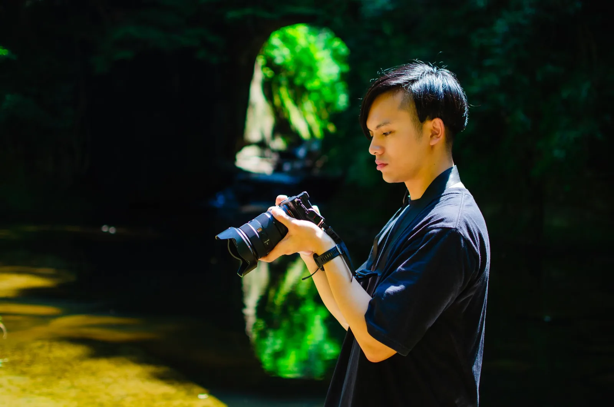

「次」につながつながる写真を。
撮るだけでは終わらない、次のための写真を。
SCROLLWORKS作品
写真をクリックすると拡大できます。

ABOUTsHIgoku（シゴク）
2023年よりフォトグラファーとして活動を開始。
技術の先にある「思想やストーリー」を突き詰め、見る人の行動につながる一枚を撮影します。単なる記録にとどまらず、見る人の心に問いかけ、次の行動や変化のきっかけとなる「次につながる写真」を追求しています。
競技ヨーヨーで世界一になった経験を活かしながら、写真でも世界一を目指しています。
- 拠点
- 福岡
受賞歴
| 年 | 内容 |
|---|---|
| 2026 | 第72回全国展フォトコンテスト 第1部 日本の文化 入選 |
| 2026 | 第2回 SONY THE NEW CREATORS 入賞 |
| その他 | 1x にて Published、Award 多数 |
使用機材
- カメラ
- SONY α1 ／ SONY α7C ／ Leica Q2
- レンズ
- SIGMA 14-24mm F2.8 DG DN | Art ／ SONY 24-70mm F2.8 GM II ／ SONY 28-60mm F4-5.6 ／ SONY 70-200mm F2.8 GM II ／ SIGMA 150-600mm F5-6.3 DG DN OS | Sports
- ストロボ
- GODOX AD100Pro ／ GODOX 860 III
SERVICES提供できること
提供できること、対応領域、費用の目安です。内容に合わせてお見積りします。
Nature
風景・自然写真の撮影、作品提供、ロケ同行。
作品利用 ¥XX,000〜Event
祭り、ライブ、舞台、式典の記録撮影。当日納品も相談可。
半日 ¥XX,000〜Commercial & Space
店舗・施設・商品の撮影。Web、パンフレット向け。
1案件 ¥XX,000〜Portrait
プロフィール、アーティスト、取材用のポートレート。
1時間 ¥XX,000〜※ 金額は目安です。撮影時間、納品点数、利用範囲により変わります。
- ご相談目的、届けたい相手、時期、予算の目安を教えてください。
- 打ち合わせ・ご提案内容と進め方、お見積りをご提案します。
- 撮影必要に応じて下見をし、最適な日時に撮影します。
- 納品セレクトと現像のうえ、用途に合わせてお届けします。
CONTACTお問い合わせ
撮影のご相談、お見積り、取材のご依頼はこちらから。2営業日以内に返信します。
メールでも受け付けています：you@example.com／Instagram @yourname